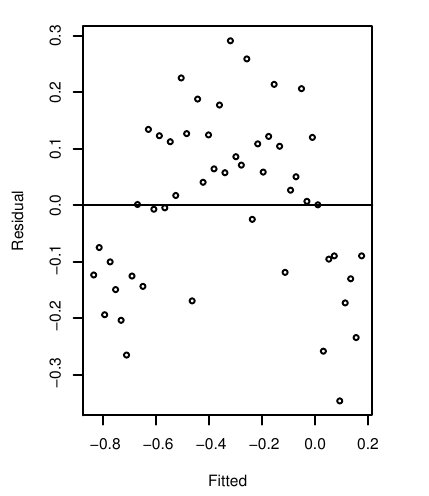

Write your name at the top right. You are to work on this quiz alone without any help from any other resource except for a single \(8.5 \times 11\) inch page of handwritten notes.
This quiz will be ungraded but must be handed in for attendance.
In the figure below is a plot of the residuals versus the fitted values for some linear model. Which of our usual assumptions may not hold, and what does this imply for the linear model? What test can we use to diagnose the issue?
Here we see an indication of non-constant variance in the errors. This is a violation of the Gauss-Markov theorem though, we note, this doesn’t imply that the estimated parameters by ordinary least squares will be biased. On the other hand, the estimates of the standard errors will be biased and thus our uncertainty quantification will be biased. We can use an F-test for variances to test for this kind of behavior in the residuals.
In the figure below is a plot of the residuals versus the fitted values for some linear model. Which of our usual assumptions may not hold, and what does this imply for the linear model?
Here, the the assumption of the uncorrelated errors is in question, as well as the structure of the model itself, i.e., \[\mathbf{Y}= \mathbf{X} \boldsymbol{\beta} + \boldsymbol{\epsilon}.\] Once again, if the assumptions on the errors are not satisfied, we can expect our uncertainty quantification to be biased. Moreover, if the structure of the model does not hold, this has many consequences for the reliability of our model. If the model structure is not accurate, this will mean all estimates will have bias in ways that are difficult to quantify.